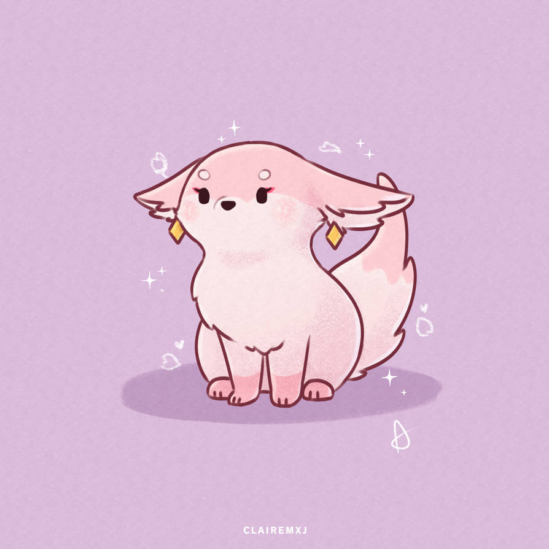

HOME
ABOUT ME
MY PORTFOLIO
PERSONAL DEVELOPMENT
References
Here is a list providing you with the references that I used.
Anuli, C. (2022). INT3001 Lecture 6 Web Design Principles and Wireframes
Coding Karunadu. (2021, January 12). Personal Portfolio Website Using html and css only
FDocuments. (2015, April 18). Twelve Pillars by Jim Rohn and Chris Widener pages 43-80.
Media, T. (2017). Easy Fullscreen Landing Page With HTML & CSS
Refsnes Data. (2019). HTML Styles.